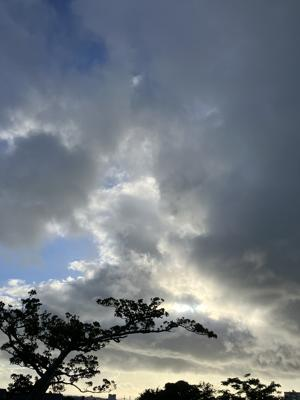
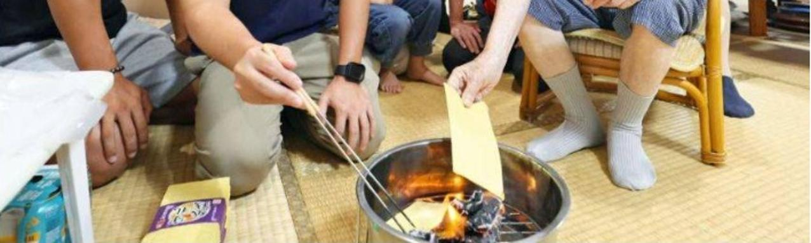
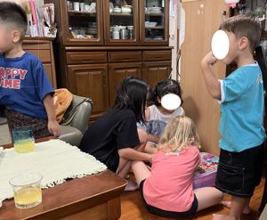

うるがいの話 ある日
最新: ウチカビについて【うるがいの話 ある日】とは 一日だけのプログです
『うるがいの話』の最新一日だけのプログで、通信料が少なく経済的だ。カニの画像をクリックすると全ての日付が載る『うるがいの話』サイトを表示します
|
|
【うるがいの話】 うるがい(ｳﾙｶﾞｲ urugai)とは、『もずくがに』の名前でとても大きくなります。 |
|---|---|
|
|
【カミマヤーの話】 猫のことを方言でマヤーといいます。カミマヤー（kamimayaa）とは、神の猫のことです。 |
|
【たながぁの音楽】 たながぁ（ﾀﾅｶﾞｰ tanagaa）とは手長えびのことで、何種類かあり大きいのは車 エビぐらいになります。 |

|
【ぶながぁの話】 ぶながぁ(ﾌﾞﾅｶﾞｰ bunagaa)とは、赤い髪の毛、赤い身体、そして身長は１ｍ２０ｃｍ ぐらい、川の蟹を食べているの目撃された。場所は沖縄県国頭郡大宜味村のと ある村僕の隣近所に住んでいる爺さんから、聞いた話です。 |
|
|
【ギーマの話】 ギーマ(giima)とは、山原の里山に咲くスズランに似た、 花を付けます。実は食べられます、 気が付くと口の周りが紫になっています。 |
2025年09月07日 (日）ウチカビについて
15:46

『危ない！、新聞誌は良くないと思う』と、大きな鍋の下に汚れ
ないようにと新聞紙を置いた。ウチカビに火をつける私は避難さ
れる。煙や、灰で仏間は汚れてしまった。先祖を見送った後、掃
除機をか雑巾がけをする。うーん、来年はウチカビは家の外でや
ろうと決意を新たにする。写真は新聞からであるが灰は飛ばない
のだろうか・・・・・。

突如として家に訪れた子供達である。叔父さんは、いろいろと思
うところがあるのである。来年もくるのだろうか？、コドモのゴ
マも重なると大変である。一人を除いて妹の娘達の子供である、
どう見てもアメリカ人がいる。

『罪と罰』と４２日もかけて完読しました。面白いかと言われる
と、ウーンそうでもない。昨日音程がずれている曲『なごり雪』
を訂正した、冬の歌なんだけどアップするか悩んだが、寝かすの
もなんなんで工工四を作成してアップした（この前、３回も視聴
があったので）。
降りてきた曲『Ｄｏｎ＇ｔ Ｃｒｙ Ｏｕｔ Ｌｏｕｄ （伊東
ゆかり あなたしか見えない） 三線』をおととい作成したの
で昨日のプログで紹介しようと思ったのだが、ドラマで動画の公
開予約をみて、私もやってみた。で、プログの事前確認をしたら
動画はログインしない人は、視聴できないと怒られたのでプログ
での照会は、止めた。予約は、今朝の０時、９時半には既に２回
の視聴があった。ホー、興味ある人がいるのだと、アップ済の動
画の工工四作成に励むのである。